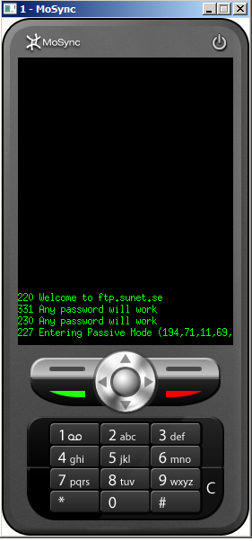

Here we take a look at how to use the MAUtil's Connection API to communicate over sockets using TCP. We will illustrate how to use them by making a simple FTP client.
An FTP client begins by setting up a socket to the FTP server, authorize itself and then continues by sending instructions. All communication is done in plain text which makes the protocol both easy to understand and use. For further information about the FTP protocol see cr.yp.to/ftp.html.
We will implement all functionality as functions in a class inherited from Moblet, so we begin by creating a project from a Moblet template, adding a few #include directives, and declaring inheritance from the MAUtil::ConnectionListener class:
#include <MAUtil/Moblet.h>
#include <MAUtil/Connection.h>
#include <MAUtil/Util.h>
#include <conprint.h>
#include <mastdlib.h>
using namespace MAUtil;
class MyMoblet : public Moblet, ConnectionListener
{
Then add the member variables of the class, a Connection instance, and a temporary string buffer. The string buffer will be used to store the incoming responses from the server:
private: Connection mConnection; char lineBuffer[1024];
We continue by defining the Constructor. In the initialization list we initialize the connection by passing a pointer to this (the MAUtil::ConnectionListener). In the constructor we connect the connection to a socket, i.e. the FTP server we're going to communicate with. FTP communication defaults to port 21, but in some cases FTP servers may use other ports. We verify that the connection has been successfully initiated by checking the return value from connect.
public:
MyMoblet() : mConnection(this)
{
int res = mConnection.connect("socket://ftp.sunet.se:21");
if(res < 0)
{
maPanic(res, "mConnection.connect failed");
}
}
Now we will add some helper functions to receive, parse, and send the FTP response and requests. First we add a function that receives incoming data to the temporary string buffer:
void getNextFtpResponse()
{
mConnection.recv(lineBuffer, 1024);
}
When the response has been received the connRecvFinished function derived from the ConnectionListener, which we will implement later, is invoked. Next we implement a function to put an FTP request. It adds a line breaking sequence that conforms to the FTP standard and writes the request to the connection. The connWriteFinished function will be invoked when the request has been written.
void putFtpRequest(const char *req)
{
char temp[1024];
int len = sprintf(temp, "%s\015\012", req);
mConnection.write(temp, len);
}
Finally, we add a function that parses the response code of a response line. (The link to the FTP protocol description at the top of this guide describes the format of a response.)
We first trim the spaces in the beginning and then parse the following number:
int parseFtpResponseCode(const char *lineBuffer)
{
int i=0;
char temp[16];
while(lineBuffer[i]==' ') { i++; }
// trim spaces in the beginning
while(isdigit(lineBuffer[i])) temp[i++] = lineBuffer[i];
temp[i] = 0;
return atoi(temp);
}
Now that the helper functions are ready we can implement the actual communication. First we implement the connectFinished function derieved from the ConnectionListener which checks if everything went well and if that is the case, receives the next FTP server response.
void connectFinished(Connection* conn, int result)
{
if(result < 0)
{
printf("mConnection.connectFinished failed");
return;
}
getNextFtpResponse();
}
The connWriteFinished will look exactly the same. Whenever we've sent an FTP request we want to receive a new FTP response.
void connWriteFinished(Connection* conn, int result)
{
if(result < 0)
{
printf("mConnection.write failed");
return;
}
getNextFtpResponse();
}
When we've received a response from the server we can decide on what to do next. The final function connRecvFinished derived from the ConnectionListener will be called when a response has been received. First we split the lines of the response into a list of strings, one for each line. The response code will be the same for each line, so we parse the response code of the first line. By analyzing the response code, the client program can determine what state the FTP connection is in and choose what to do next.
We will only implement a few steps in the initial handshaking procedure. After the PASV command has been sent, a response with a new IP address and port is recieved. This IP address should be used to set up a data connection. All data traffic will be handled over this connection. Even the result from requests like LIST, which list all files in a directory. Implementing this functionality is left as an exercise for the reader.
void connRecvFinished(Connection* conn, int result)
{
if(result < 0)
{
printf("mConnection.recv failed");
return;
}
// We may have recieved several lines in one response,
// but all of them will begin with the same response code.
Vector<String> responses;
stringSplit(lineBuffer, "\015\012", responses);
// the last one will always be an empty string
responses.resize(responses.size()-1);
for(int i = 0; i < responses.size(); i++) printf("%s", responses[i].c_str());
int code = parseFtpResponseCode(responses[0].c_str());
switch(code)
{
// 220 welcome - we respond with a user (anonymous in this case)
case 220: putFtpRequest("USER anonymous"); break;
// 331 identify yourself in a password - we can send any password as we're anonymous.
case 331: putFtpRequest("PASS dummy"); break;
// 230 thanks - we enter passive mode
case 230: putFtpRequest("PASV"); break;
}
}
};
If you've done everything right, the result will look like this:
